Embedded Programming
By: Debasis Parida on:
This week's assignment is on Embedded Programming, which is very closer to my interest as it is my hobby area.In this week, i had to try multiple microcontroller's programming along with their architecture. I am planning to program Arduino, ATmega16 and explore some of their functionalities such as Digital I/O, PWM etc.
Programming an Arduino

Arduino is an open hardware development board based on ATmega328P microcontroller that can be used by Innovators, hobbyists, and makers to design and build devices that interact with the real world.Arduino contains a number of different parts and interfaces together on a single circuit board including Digital I/O pins, Analog input pins, PWM pins etc.
Arduino Pinout:
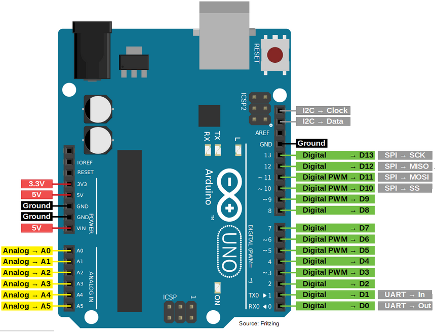Specifications of Arduino UNO:
- Microcontroller: Microchip ATmega328P
- Operating Voltage: 5V DC
- Input Voltage: 7 to 20 Volts
- Digital I/O Pins: 14 (of which 6 can provide PWM output)
- Analog Input Pins: 6
- DC Current per I/O Pin: 20 mA
- DC Current for 3.3V Pin: 50 mA
- Flash Memory: 32 KB of which 0.5 KB used by bootloader
- SRAM: 2 KB,EEPROM: 1 KB
Programming Arduino for Digital I/O:
In this section we will program the Arduino to give digital output in different pins.As per circuit diagram we have connected two LEDs with two current limiting resistors in pin 12 and 11 respectively. So i need to program it to Turn ON both the LEDs, Turn ON/OFF at specific delay intervals etc.
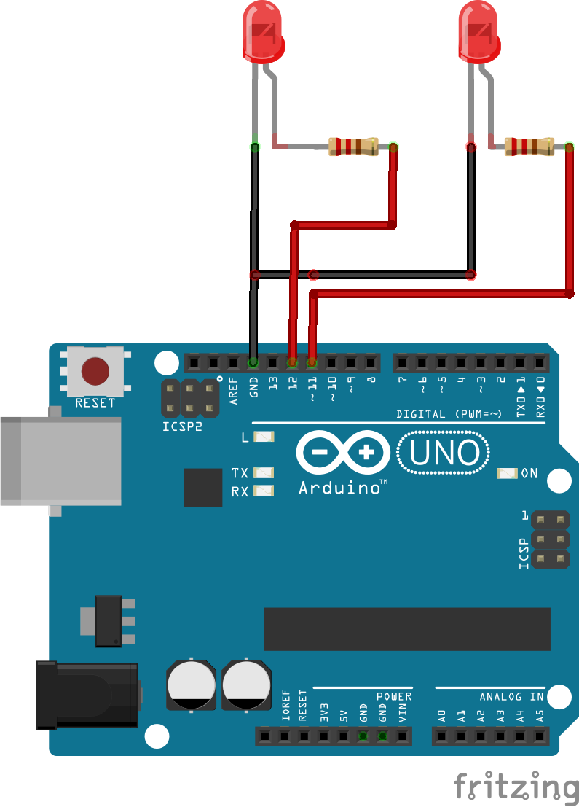So first of all, i need to download Arduino IDE which open source to download then i need to launch it.To glow both the LEDs i need to give digital High to both the pins.The code to do the same is shown as below:
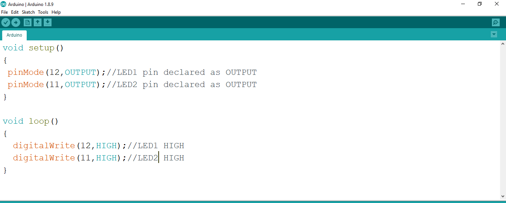To upload the code, connect the Arduino to PC using the USB cable, then in Arduino IDE compile the code using the "verify/compile" option under sketch.If it is compiled successfully, then select the port number from Tools menu as shown in the figure and Click on "Upload", and it should upload the code to Arduino showing uploaded successfully.
 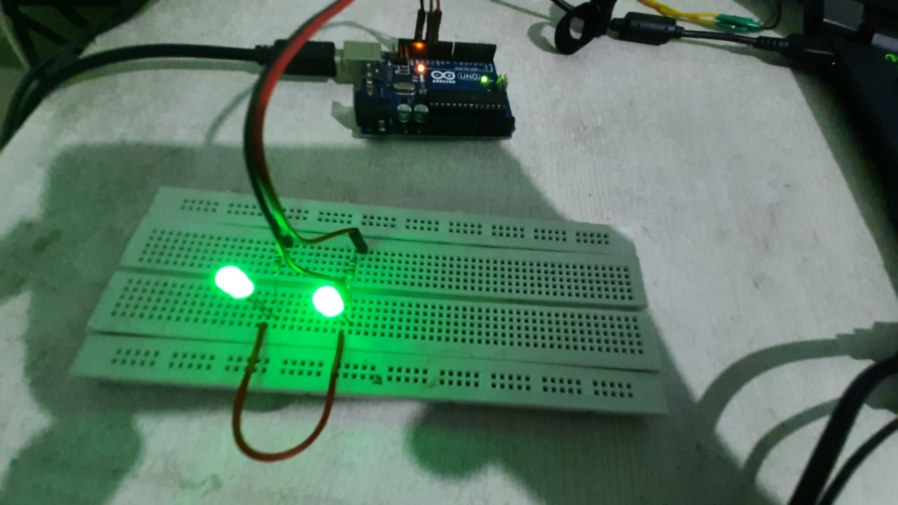
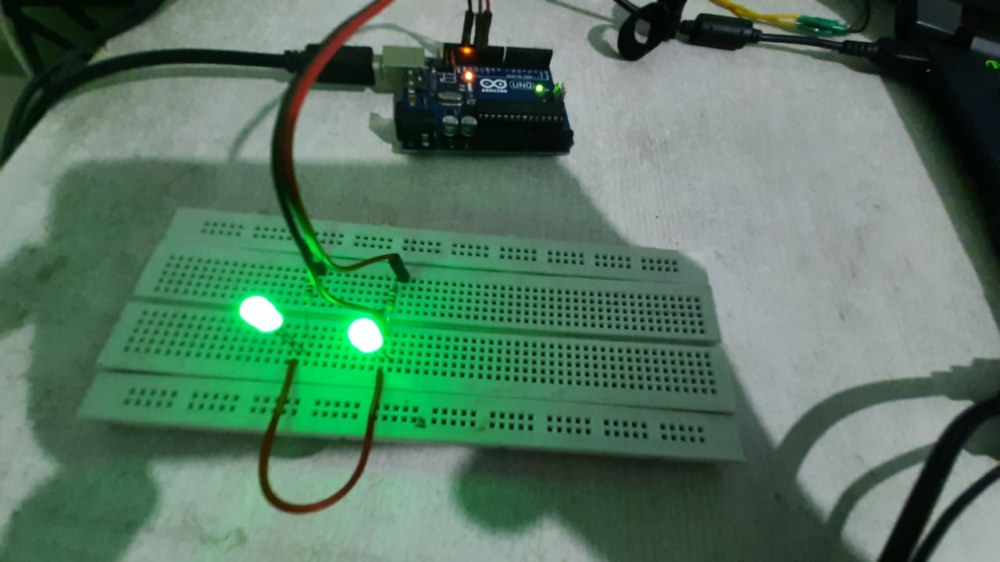
Now to use delay in between the glowing time of LEDs we need to change the code a bit.This is shown as below:
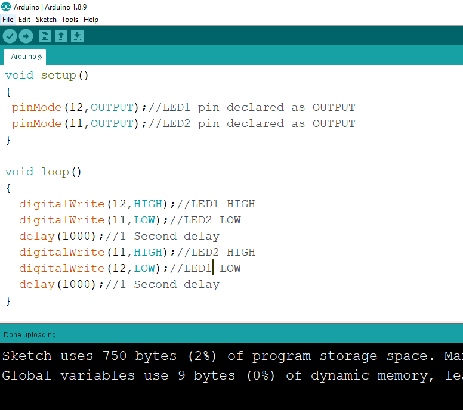 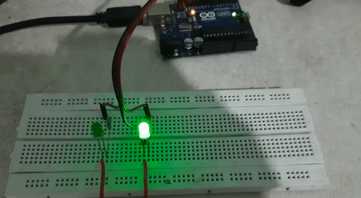Then i had used two buttons with Arduino two test for Digital inputs and LEDs to glow when buttons are pressed. The Circuit diagram and code to the project are shown below:
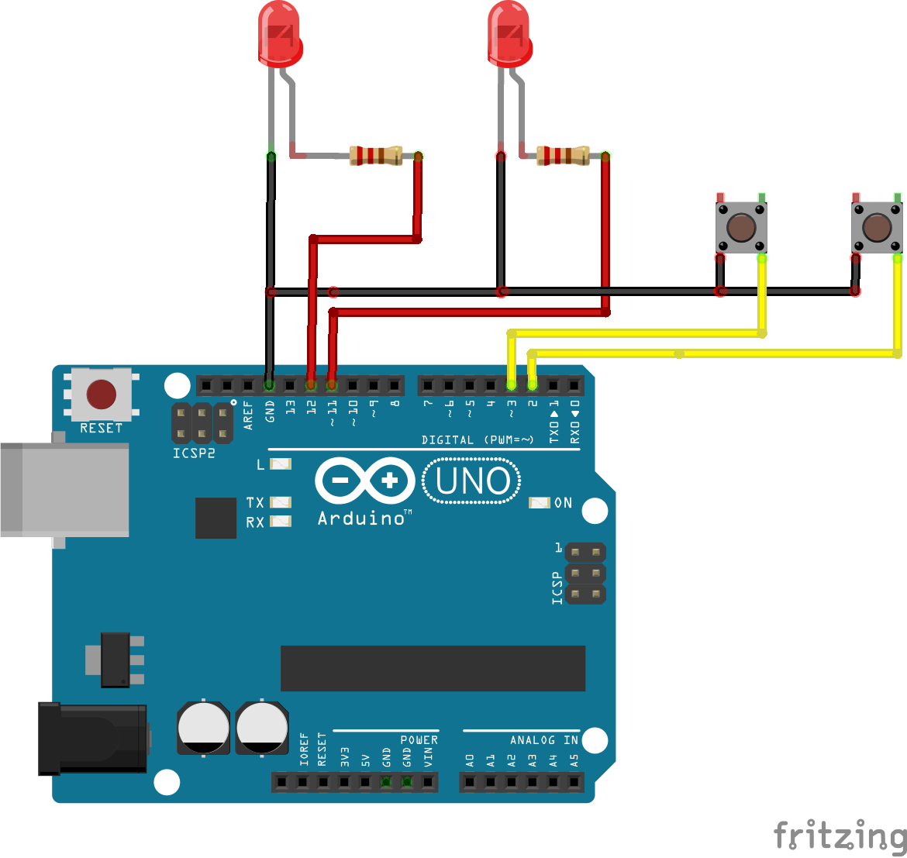 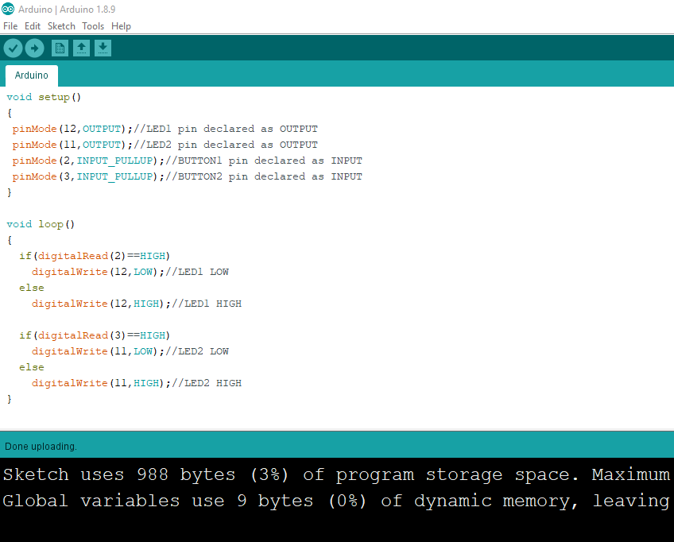 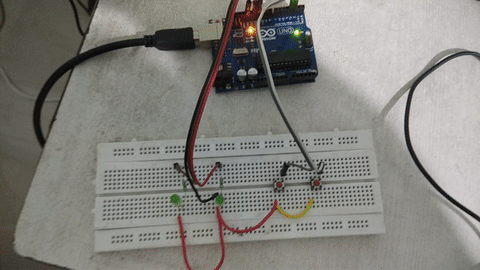Programming AVR Microcontroller:
AVR microcontrollers are very popular in product lines for their RISC architectures and efficient feactures. In this week, i have used ATmega16 microcontroller to explore some of it's functionality. I had an ATmega16 development board and USPASP programmer using which i have done all the programmings. The pin diagrams and the other details are given below:
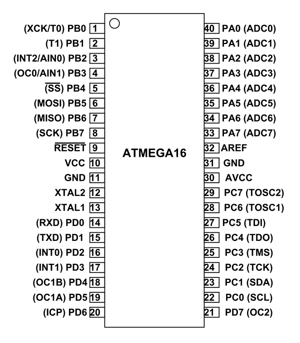The AVR microcontrollers are based on the advanced RISC architecture and consist of 32 x 8-bit general purpose working registers. Within one single clock cycle, AVR can take inputs from two general purpose registers and put them to ALU for carrying out the requested operation, and transfer back the result to an arbitrary register. The ALU can perform arithmetic as well as logical operations over the inputs from the register or between the register and a constant. Single register operations like taking a complement can also be executed in ALU. The features of ATmega16 are given below:
- 16KB of Flash memory
- 1KB of SRAM
- 512 Bytes of EEPROM
- Available in 40-Pin DIP
- 8-Channel 10-bit ADC
- Two 8-bit Timers/Counters
- One 16-bit Timer/Counter
- 4 PWM Channels
- In System Programmer (ISP)
- Serial USART interface
Programming AVR Microcontroller for digital IO:
First i started with digital output with ATmega16. Here i have used AVR studio4 as IDE and Sinaprog Hex downloader to burn the code into the microcontroller.The connection diagram for digital output is very simillar to Arduino which is shown below:

First of all in AVR studio4 a new project was created and the code for glowing all the LEDs in ATmega16 is written in as shown below:
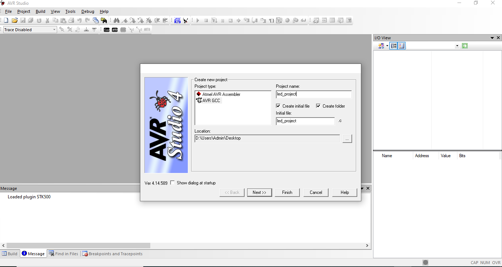 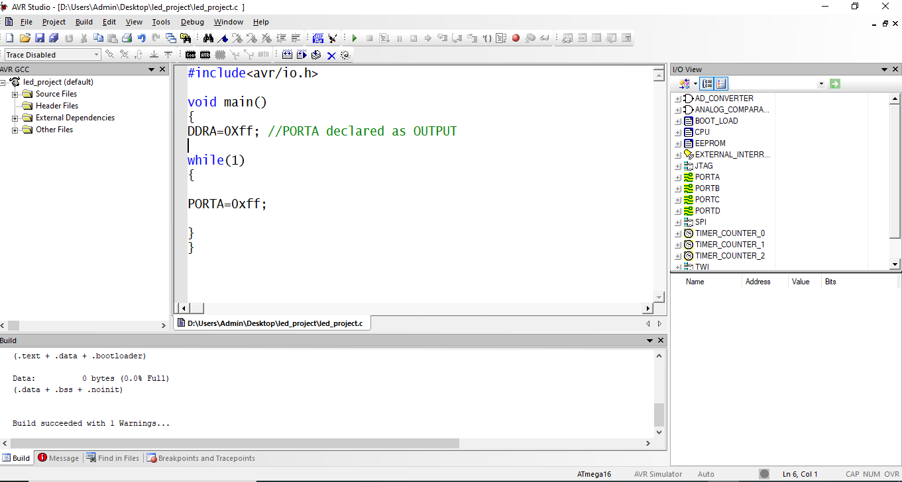Then, compile the code in AVR studio 4 and after successful compilation, a hex code must be created in the project directory which needs to be burned to the microcontroller for which i used Sinaprog hex downloader software which is shown below:
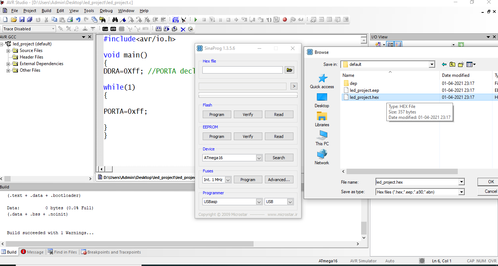 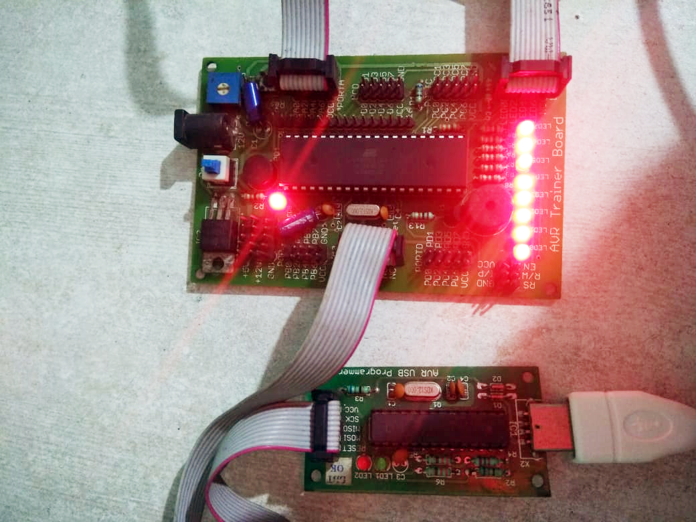Now its time to test the Timer delay function in ATmega16. Unlike Arduino, here i have tried some new things which is LED chaser using For loop which is shown below.
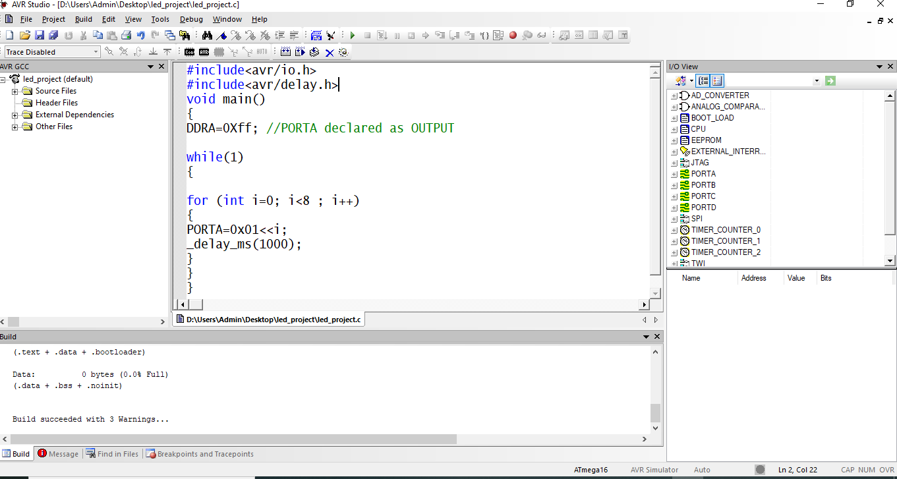 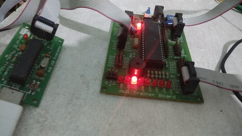Finally, to test the digital input, i took two Momentary Push Buttons and connected them to ATmega16 in PORTA, and Connected two LEDs to PORTC simillar to Arduino. Now the code to read the Button values are shown below.
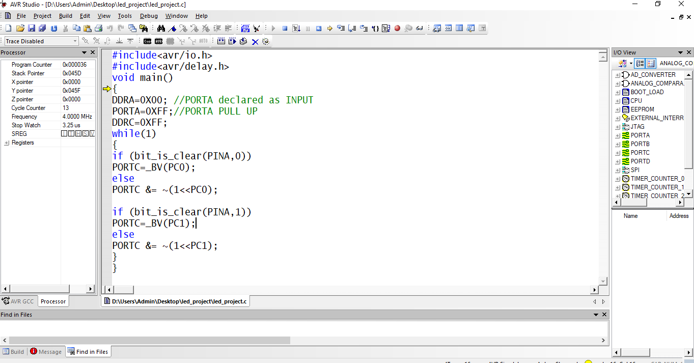 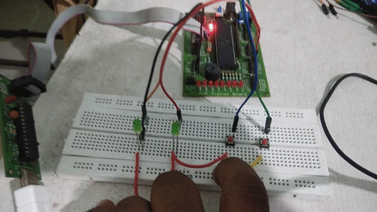